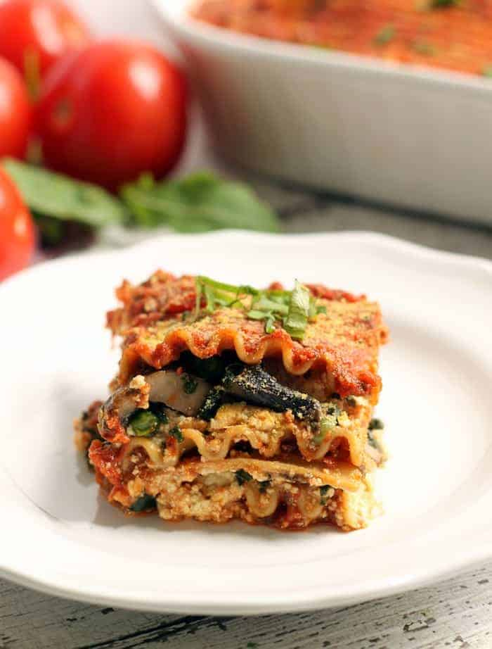

Lasagna

Description
Lasagna is a dish originating from Italy which involves, traditionally, the cooking of a sauce with lamb or beef and a béchamel sauce. The dish is then constructed via alternating layers of lasagna
pasta and the aforementioned sauce with perhaps a layer of béchamel sauce in the middle, if there is enough, and then finished by one more layer of béchamel sauce.
However, the vegan version is a bit different, of course.
Ingredients
- Lasagna noodles
- Extra Firm Tofu
- Garlic
- Vegtables, choose whichever you want but here are some suggestions,
- mushrooms
- aubergine
- courgette
- pepper (any colour)
- any other veg you want!
- Salt
Instructions
- Boil the lasagna noodles
- Press your tofu until it is tofu ricotta
- Mix together some ingredients
- Sautè some vegetables and seasons to taste
- Assemble the ingredients above into a dish
- Cook for a sufficient amount of time
- Et, voilá!